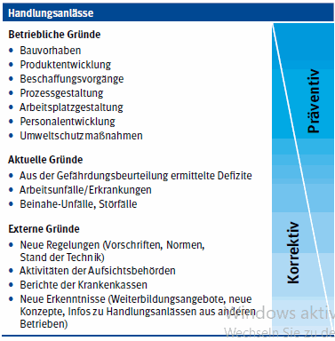
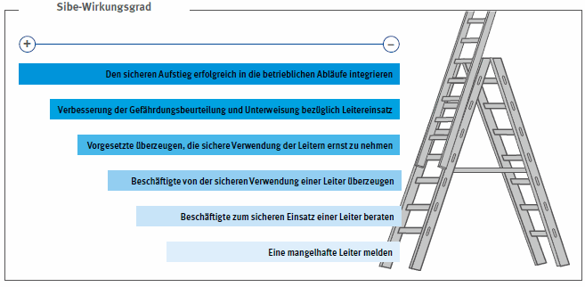

In der Aus- und Fortbildung der Sicherheitsbeauftragten hat neben der Vermittlung des Fachwissens im Arbeitsschutz die Vermittlung der Sozial- und Methodenkompetenz einen hohen Stellenwert. Dabei geht es darum, wie Sicherheitsbeauftragte ihre Aufgaben durchführen können.
Um als Sicherheitsbeauftragter/als Sicherheitsbeauftragte erfolgreich arbeiten zu können, ist es erforderlich, die Grundlagen für einen zeitgemäßen Arbeitsschutz zu kennen, und die dafür erforderlichen Methoden im Alltag anwenden zu können. Ein zeitgemäßer Arbeitsschutz beinhaltet:
Leitprinzip Prävention
Prävention bezeichnet allgemein Maßnahmen zur Verhinderung und Minimierung unerwünschter Zustände. Im Arbeitsschutz wird Prävention als Leitprinzip gesehen. Es geht darum, nicht nur auf Defizite zu reagieren, sondern das Arbeitsumfeld aktiv, im Sinne einer menschengerechten Arbeit, zu gestalten.
Um einen aktiven Arbeitsschutz vollständig umzusetzen, ist die Integration von Sicherheit und Gesundheit in die Betriebsorganisation erforderlich.

Abb. 6: Präventive und korrektive Handlungsanlässe im Arbeitsschutz
Menschengerechte Arbeitsgestaltung nach dem TOP-Prinzip
Das TOP-Prinzip beschreibt die Rangfolge der Schutzmaßnahmen. Bereits in § 4 Arbeitsschutzgesetz wird vorgegeben, dass Gefahren an ihrer Quelle zu beseitigen sind. Im Arbeitsschutz bedeutet dies, dass zuerst nach technischen Lösungen gesucht werden muss. Nur dann, wenn keine sinnvollen technischen Lösungen gefunden werden, versucht man das Problem mit organisatorischen Maßnahmen zu lösen. Sollten wiederum keine sinnvollen organisatorischen Lösungen machbar sein, können in einem dritten Schritt persönliche Maßnahmen realisiert werden. Das bedeutet z. B. im Bereich Lärmschutz, dass bei hoher Lärmbelastung nicht einfach Gehörschutz an die Beschäftigten ausgegeben werden kann, weil dies eine personenbezogene Maßnahme ist. Nach dem TOP-Prinzip müssen eben zuerst technische Lösungen, zum Beispiel Einhausung der lauten Maschinen, geprüft werden. Falls derartige Lösungen nicht umgesetzt werden können, folgt im Schritt 2 die Prüfung der organisatorischen Maßnahmen, wie eine zeitliche Befristung des Aufenthalts der Beschäftigten in Lärmbereichen. Nur dann, wenn auch keine organisatorischen Lösungen gefunden werden, kann im Ergebnis der Gehörschutz als personenbezogene Maßnahme eingesetzt werden.
Oftmals wird anstatt des TOP-Prinzips auch das STOP-Prinzip angewendet. Das „S“ steht dabei für Substitution. In unserem Lärmbeispiel wäre Substitution zum Beispiel der Wegfall der lauten oder der Einkauf einer leiseren Maschine.
Integration von Sicherheit und Gesundheit in die Betriebsorganisation
Wirksames betriebliches Arbeitsschutzhandeln erfordert die ganzheitliche Gestaltung der Arbeitssysteme, muss in das betriebliche Handeln integriert werden und als gemeinsames Handeln aller Beteiligten erfolgen. Vielen Gefährdungen kann nur dann wirksam begegnet werden, wenn der Arbeitsschutz von vornherein mitgestaltend auftritt.

Abb. 7: Der Wirkungsgrad der Sicherheitsbeauftragten am Beispiel "Leiter"
Je präventiver Arbeitsschutzmaßnahmen geplant werden, desto wirksamer, nachhaltiger und kostengünstiger sind im Regelfall damit Ergebnisse zu erzielen. Werden am Beispiel eines Hallenneubaus Lärmschutzmaßnahmen bereits in die Bauplanung integriert, ist es weniger aufwändig, als im Nachhinein bei der Gefährdungsbeurteilung festzustellen, dass die Halle umgebaut werden muss (siehe Abbildung 6).
Umgekehrt bedeutet das für Sicherheitsbeauftragte aber auch, dass festgestellte Mängel unterschiedlich wirksam abgestellt werden können. Wird zum Beispiel eine defekte Leiter gemeldet, die dann ersetzt wird, ist das auf Dauer weniger wirkungsvoll, als den sicheren Aufstieg beim Planen der Arbeiten direkt in die betrieblichen Abläufe zu integrieren, sodass dadurch Leitereinsätze nur noch selten erforderlich werden (siehe Abbildung 7). Sicherheitsbeauftragte sollten daher beim Abstellen der Mängel auch darüber nachdenken, wie grundsätzlich der jeweilige Mangel besprochen und beseitigt werden soll. Sicher muss im Ergebnis nicht jeder Mangel im Arbeitsschutzausschuss thematisiert werden. Bei grundlegender Bedeutung eines Mangels kann aber die Behandlung im ASA am wirkungsvollsten sein.
Kontinuierliche Verbesserung
Der betriebliche Arbeitsschutz muss dauerhaft und systematisch weiterentwickelt werden, um eine kontinuierliche Verbesserung der Sicherheit und Gesundheit bei der Arbeit zu erreichen. Die von Unternehmer/Unternehmerin durchgeführte Gefährdungsbeurteilung, Arbeitsschutzziele, Managementsysteme, das betriebliche Controlling und das „lernende“ Unternehmen sind geeignete Werkzeuge, um die vom Gesetzgeber in § 3 Arbeitsschutzgesetz angestrebte Verbesserung der Sicherheit und Gesundheit bei der Arbeit zu erreichen. Auch die Tätigkeit der Sicherheitsbeauftragten ist dabei ein Baustein innerhalb der angestrebten Verbesserung.
Beteiligung der Beschäftigten
Die Beschäftigten vor Ort kennen ihren Arbeitsplatz am besten und können einen wichtigen Beitrag leisten, um zum Beispiel Veränderungen am Arbeitsplatz praxisorientiert und erfolgreich umzusetzen. Ein erster wirksamer Schritt zur Beteiligung der Beschäftigten kann die Einbindung der Sicherheitsbeauftragten sein.
Das Gespräch stellt das wichtigste Handwerkszeug der Sicherheitsbeauftragten dar: so stellen sie den persönlichen Kontakt mit den Betreffenden her. Doch nicht jedes Gespräch verläuft gleich. In manchen Situationen fällt es leichter, in anderen hingegen schwerer, sachdienliche Hinweise wirksam an die Kolleginnen und Kollegen oder an die Führungskräfte zu bringen. Woran kann das liegen? Wie lassen sich schwierige Gespräche besser meistern?
Gründe für schwierige Gespräche
Die Tatsache, dass Sicherheitsbeauftragte eine besondere Stellung einnehmen, kann es erschweren, Aufklärungsgespräche mit Beschäftigten oder Vorgesetzten zu führen, ohne gleich als „Besserwisser“ dazustehen. Durch diese Sonderstellung bedingt werden Hinweise an die Kolleginnen und Kollegen oft als Kritik missverstanden. Sie fühlen sich nicht richtig verstanden oder sogar angegriffen.
Ziel ist es, dem Gegenüber das Gefühl zu vermitteln, dass sie/er und die geleistete Arbeit anerkannt sind, damit die Hinweise und Ratschläge der Sicherheitsbeauftragten auch wirklich zum Erfolg führen. Während des Gesprächs sind zwei Dinge von Bedeutung:
Ersteres wird über die Körpersprache und den Tonfall, Letzteres über Worte vermittelt. Sowohl Form als auch Inhalt entscheiden darüber, ob ein Gespräch gut oder schlecht verläuft. Beide „Gesprächsmodule“ stehen in enger Verbindung zueinander, beeinflussen sich gegenseitig und bilden schließlich gemeinsam die Botschaft, die bei der Gesprächspartnerin/beim Gesprächspartner ankommt. In jedem Fall gibt es einige Grundregeln dafür, wie Form und Inhalt prinzipiell gestaltet sein sollten, damit ein Gespräch gut verläuft.
Die Form
Gesprächspartnerinnen oder Gesprächspartner müssen in einem ruhigen, sachlichen und freundlichen Ton angesprochen werden, selbst dann, wenn z. B. Kolleginnen und Kollegen bereits zum zweiten Mal aufgefordert werden, den Bürodrehstuhl nicht als Steigleiter zu benutzen.
Dem Gegenüber gut zuhören, ausreden lassen und Verständnis für seine Sicht der Dinge aufzubringen, ist Voraussetzung dafür, dass auch er oder sie Verständnis für die Position der Sicherheitsbeauftragten aufbringt.
Diese Verhaltensweisen führen im Regelfall dazu, dass sich die betreffende Person ernst genommen und als kompetent und gleichberechtigt betrachtet und akzeptiert fühlt. Das Bedürfnis nach Anerkennung wird auf diese Weise befriedigt und damit die beste Basis dafür geschaffen, dass das Gespräch etwas bewirkt.
Der Inhalt
Der Inhalt des Gesprächs richtet sich nach den konkreten Umständen, wobei die „Überzeugungsarbeit“ im Mittelpunkt steht. Um im Gespräch zu überzeugen, sollten Sicherheitsbeauftragte zum Beispiel die Gefährdungen deutlich schildern und einfache Abhilfemaßnahmen anbieten.
Es ist erforderlich und zweckmäßig, dass Sicherheitsbeauftragte ihr Vorgehen im Betrieb mit den Kolleginnen und Kollegen und mit den Vorgesetzten absprechen. Diesbezüglich sollen sie gemeinsam mit den übrigen Akteuren des Arbeitsschutzes an den Sitzungen des Arbeitsschutzausschusses teilnehmen, dort die relevanten Themen ansprechen und auf die Lösung der im direkten Arbeitsumfeld bestehenden Arbeitsschutzdefizite hinwirken.
In Unternehmen, in denen ein alternatives Betreuungsmodell ausgewählt wurde, haben Sicherheitsbeauftragte grundsätzlich andere Aufgaben, als in Unternehmen mit Regelbetreuung. Sie sind häufig Ansprechperson für externe Betriebsärztinnen und Betriebsärzte, für die Berufsgenossenschaften oder die Unfallkassen und für staatliche Arbeitsschutzbehörden, da weitere „Arbeitsschutzakteure“ meist nicht gefordert, und deshalb auch nicht vorhanden sind.
Hat die Unternehmerin/der Unternehmer externe Fachkräfte für Arbeitssicherheit und externe Betriebsärztinnen und Betriebsärzte verpflichtet, wird noch offensichtlicher, welche Bedeutung den Sicherheitsbeauftragten und ihrer Tätigkeit zukommt. Während angestellte Fachkräfte betriebliche Abläufe und Arbeitsverfahren aufgrund ihrer Integration im Betrieb täglich erfahren können und über Veränderungen zeitnah informiert werden, ist die Kommunikation mit externen Fachkräften erschwert. Die Sicherheitsbeauftragten können in einer Arbeitsschutzorganisation mit externen Fachkräften für Arbeitssicherheit, Betriebsärztinnen und Betriebsärzten eine Schlüsselrolle übernehmen und dabei folgende Aufgaben wahrnehmen:
Als Merkmal für die Abgrenzung zwischen den Sicherheitsbeauftragten und der Fachkraft für Arbeitssicherheit gilt generell, dass die Fachkraft für Arbeitssicherheit die Methoden initiiert und Sicherheitsbeauftragte Tätigkeiten entsprechend dieser Methoden ausführen können (siehe dazu Tabelle 1: Gegenüberstellung Fachkraft für Arbeitssicherheit/Sicherheitsbeauftragte).
Zur Zusammenarbeit gehört, dass die Unternehmerin/der Unternehmer einen gut funktionierenden Informationsfluss organisiert und die Sicherheitsbeauftragten einbezieht in relevante Entscheidungen, die ihren Arbeitsbereich betreffen. Dieses Vorgehen stellt sicher, dass es keine „übergestülpten“ Schutzmaßnahmen vor Ort gibt und die Sicherheitsbeauftragten in ihrer Rolle von den Beschäftigten akzeptiert werden.
Außerdem ist die Einbindung der Sicherheitsbeauftragten in den Prozess der Gefährdungsbeurteilung und die Beteiligung an Unfalluntersuchungen sowie Betriebsbegehungen mit Vertreterinnen und Vertretern der staatlichen Ämter, den Unfallkassen oder den Berufsgenossenschaften zielführend.